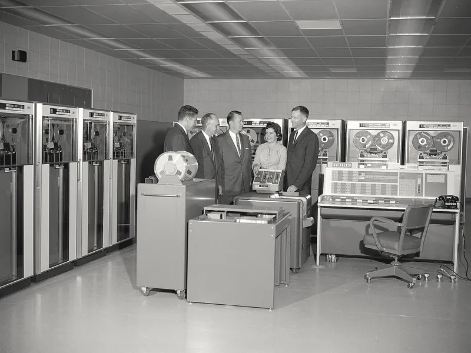
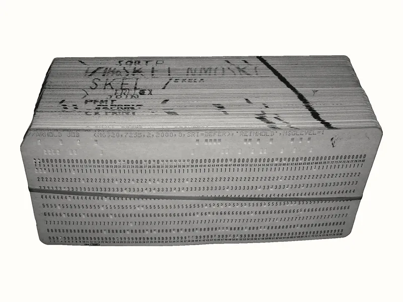
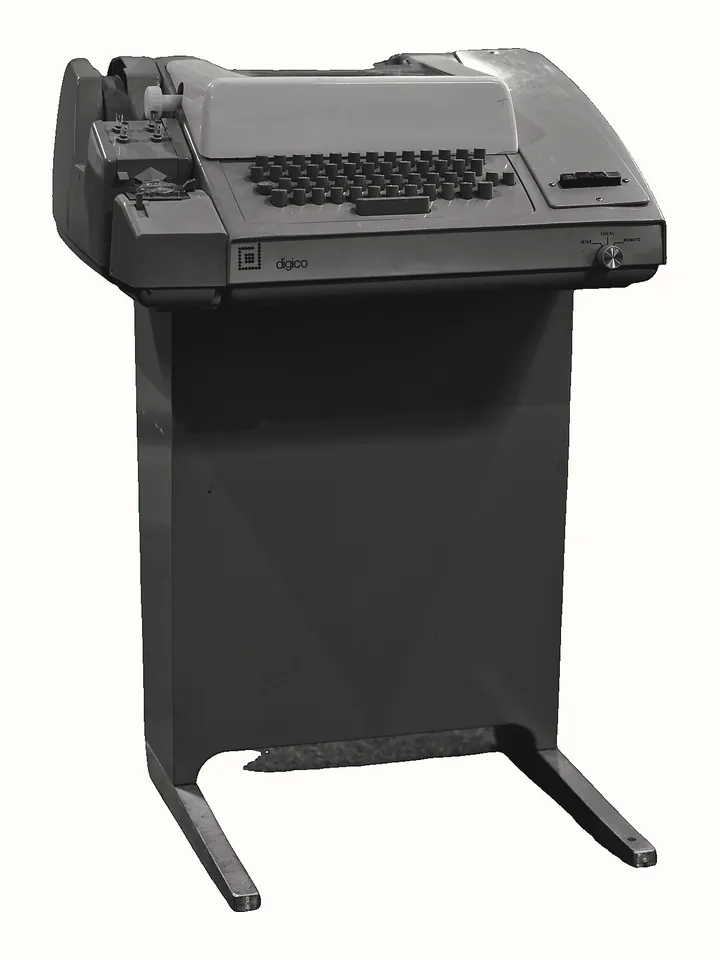
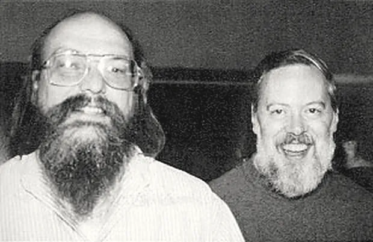
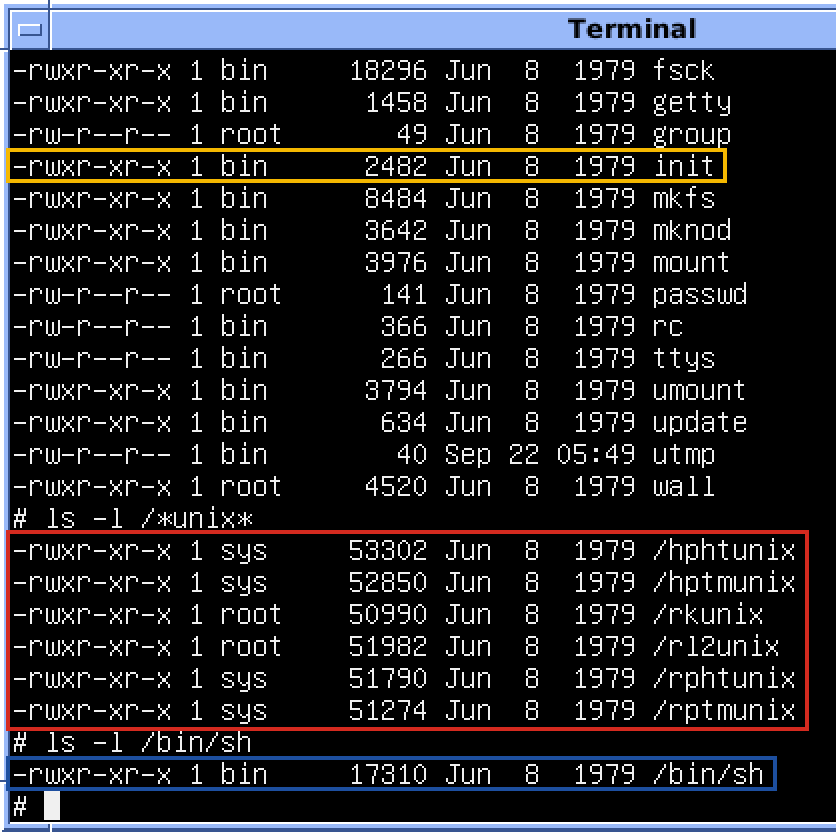

Phụ lục trả lời một câu hỏi mà Bài 03 để ngỏ: vì sao giữa chương trình và phần cứng lại có một lớp trung gian là kernel, và vì sao chương trình đang chạy lại được gói thành một process? Không ai thiết kế những khái niệm đó từ đầu. Mỗi khái niệm là lời giải cho một vấn đề cụ thể, và vấn đề đầu tiên là chuyện tiền.
Trước khi có hệ điều hành: máy chờ người
Những máy tính điện tử thương mại đầu tiên, vào thập niên 1950, đắt tới mức chỉ viện nghiên cứu, cơ quan nhà nước và công ty lớn mua nổi, và chúng không có hệ điều hành. Người dùng đăng ký một khung giờ, tự mang chương trình tới, tự nạp vào máy, chạy, lấy kết quả rồi nhường máy cho người sau. Chương trình thường được đưa vào máy dưới dạng thẻ đục lỗ (punched card): những tấm thẻ giấy cứng, mỗi thẻ thường chứa một dòng lệnh, mã hoá bằng vị trí các lỗ đục.
Cách làm này lãng phí đúng thứ đắt nhất. Trong lúc con người thao tác (đặt bộ thẻ, lắp cuộn băng, gạt công tắc, đọc kết quả), CPU không làm gì cả. Vì vậy vấn đề đầu tiên mà hệ điều hành ra đời để giải quyết là vấn đề kinh tế: thời gian của máy đắt hơn thời gian của người, nên phải bỏ con người ra khỏi khoảng trống giữa hai chương trình.
Chạy theo lô và chương trình giám sát
- Batch processing xử lý theo lô
- Gom công việc (job) của nhiều người thành một lô và cho máy chạy liên tiếp từ job này sang job khác, không cần người can thiệp giữa hai job.
- Resident monitor chương trình giám sát thường trú
- Một chương trình nằm thường trực trong bộ nhớ, đọc job tiếp theo, nạp và chạy nó, rồi lấy lại quyền điều khiển khi job kết thúc.
Cơ chế rất đơn giản. Người lập trình nộp bộ thẻ cho nhân viên vận hành; bộ thẻ của nhiều người được xếp nối nhau, thường được chép trước lên băng từ để máy đọc nhanh hơn. Chương trình giám sát lần lượt nạp và chạy từng job. Khi một job kết thúc, hoặc chạy quá thời gian cho phép, quyền điều khiển quay về chương trình giám sát, và nó nạp job tiếp theo. Đây là dạng sơ khai đầu tiên của thứ Bài 03 gọi là kernel: một chương trình đứng giữa máy và chương trình của người dùng, quyết định chương trình nào được chạy tiếp theo.


Giới hạn: CPU vẫn chờ, người vẫn chờ
Chạy theo lô giải quyết được khoảng trống giữa hai job, nhưng để lại hai khoảng trống khác. Thứ nhất, mỗi lúc chỉ có một job trong bộ nhớ, nên khi job đó phải chờ băng từ hay máy in (những thiết bị cơ khí chậm hơn CPU nhiều bậc), thì CPU lại ngồi không. Thứ hai, người lập trình phải chờ: nộp bộ thẻ xong, thường phải đợi hàng giờ, có khi tới hôm sau, mới nhận được bản in kết quả. Gõ sai một dấu phẩy nghĩa là thêm một vòng chờ nữa.
Cảnh chờ ấy về sau thành chuyện để kể, và để nói quá, như ở Ảnh 2.
![Truyện sáu khung. Một người hỏi: What were things like in the old days? I hear you had to compile things for different processors? Người kia: Yeah. To compile your code, you had to mail it to IBM. Took 4-6 weeks. Before garbage collection, data would pile up until the computer got full and you had to throw it away. Early compilers could handle code fine, but comments had to be written in assembly. C could only be written on punch cards. You had to pick a compact font, or you'd only fit a few characters per card. C++ was big because it supported floppy disks. It still just punched holes in them, but it was a start. Người hỏi: Wow.](img/xkcd-old-days.webp)
Đa chương trình: giữ nhiều job trong bộ nhớ cùng lúc
Lời giải cho khoảng trống thứ nhất là đa chương trình (multiprogramming): nạp nhiều job vào bộ nhớ cùng lúc; khi job đang chạy phải chờ thiết bị, chương trình giám sát chuyển CPU sang một job khác đang sẵn sàng. Hình 1 so sánh hai cách. CPU vẫn chỉ chạy một job tại một thời điểm, nhưng thời gian chờ của job này được lấp bằng công việc của job khác.
Một job trong bộ nhớ (chạy theo lô)
CPU AAAA........AAAA........AAAA . = CPU chờ băng từ, máy in
Ba job trong bộ nhớ (đa chương trình)
CPU AAAABBBBCCCCAAAABBBBCCCCAAAA A phải chờ thì B chạyNhưng nhiều chương trình nằm chung một bộ nhớ sinh ra một vấn đề mới: một job lỗi có thể ghi đè lên job khác, hoặc lên chính chương trình giám sát và làm hỏng cả lô. Vì vậy phần cứng của các máy tính thời này dần có thêm hai cơ chế: bảo vệ bộ nhớ, để mỗi job chỉ ghi được vào vùng của mình, và chế độ đặc quyền của CPU, để chỉ chương trình giám sát mới được điều khiển thiết bị và đổi vùng bảo vệ.
Hai cơ chế đó chính là nền của tab Kernel: kernel chạy ở chế độ đặc quyền của CPU, mọi chương trình khác ở user space và phải xin qua syscall; mỗi process có vùng nhớ riêng, không đọc được vùng nhớ của process khác. Chúng ra đời vì nhiều job phải chia nhau một bộ nhớ.
Đa chương trình làm máy bận rộn, nhưng người lập trình vẫn chờ hàng giờ. Lời giải cho khoảng trống thứ hai ấy cũng chính là nơi khái niệm process thành hình.
Time-sharing: nhiều người dùng chung một máy, cùng lúc
- Time-sharing chia sẻ thời gian
- Cách vận hành trong đó thời gian CPU được cắt thành những lượt rất ngắn, luân phiên giữa chương trình của nhiều người dùng, nhanh tới mức mỗi người đều có cảm giác máy chỉ đang phục vụ mình.
- Terminal thiết bị đầu cuối
- Thiết bị chỉ dùng để gõ lệnh và nhận kết quả, nối với máy tính ở xa. Thời đó thường là một teletype: máy đánh chữ điện, in câu trả lời của máy tính ra giấy cuộn.

tty mà Linux vẫn dùng để gọi
terminal là viết tắt của teletype.Điểm khác với đa chương trình nằm ở lúc nào CPU được chuyển. Đa chương trình chỉ chuyển khi job đang chạy phải chờ thiết bị; một job tính toán dài không bao giờ chờ thì giữ CPU tới khi xong. Time-sharing chuyển theo đồng hồ: một bộ đếm giờ phần cứng định kỳ lấy quyền điều khiển khỏi chương trình đang chạy và trả về cho hệ điều hành, và chương trình hết lượt bị tạm dừng dù chưa xong. Không ai giữ được CPU quá lâu, nên người ngồi ở terminal gõ một lệnh và nhận câu trả lời sau vài giây thay vì sau vài giờ.
terminal 1 ──┐
terminal 2 ──┼──► một máy tính ──► CPU: 1 2 3 1 2 3 1 2 3 ...
terminal 3 ──┘ hết lượt thì chuyển, dù chưa xongMột trong những hệ time-sharing đầu tiên là CTSS (Compatible Time-Sharing System) ở MIT, đầu thập niên 1960, chạy trên một máy IBM 7094 đã được sửa đổi, đời sau của chiếc 7090 ở Ảnh 1. Từ đó, ý tưởng một máy tính phục vụ nhiều người qua terminal trở thành hướng đi chính của các hệ điều hành.
Từ cắt lượt tới process
Cắt lượt đặt ra một yêu cầu mà chạy theo lô không có. Một chương trình bị dừng giữa chừng thì phải chạy tiếp được đúng từ chỗ đó ở lượt sau, như chưa từng bị dừng. Vì vậy với mỗi chương trình đang chạy, hệ điều hành phải giữ lại một bộ trạng thái: lệnh tiếp theo cần chạy, các giá trị đang tính dở trong CPU, vùng bộ nhớ của nó, các file nó đang mở, và nó thuộc người dùng nào. Chương trình đang chạy cùng bộ trạng thái đó là thứ ta gọi là process. Danh sách ấy gần như trùng khớp với Hình 6 của Bài 03, các thuộc tính riêng của một process; chúng tồn tại vì nhiều chương trình phải chia nhau một CPU mà không giẫm lên nhau.
Multics: tham vọng lớn, và Bell Labs rút lui
Giữa thập niên 1960, MIT, Bell Labs (phòng nghiên cứu của công ty điện thoại AT&T) và hãng General Electric cùng làm Multics, một hệ time-sharing rất tham vọng, nhắm tới việc phục vụ rất nhiều người cùng lúc như một tiện ích công cộng. Tham vọng đó kéo theo độ phức tạp. Theo hồi ký của Dennis Ritchie, một người của Bell Labs trong dự án, tới khoảng 1968–1969 Multics vẫn chưa cho ra một hệ thống dùng được như mong đợi, và Bell Labs dần rút khỏi dự án. Vài lập trình viên của Bell Labs vì thế mất một môi trường làm việc mà họ đã quen.
Bộ lập lịch của kernel trong tab Bốn tài nguyên kế thừa trực tiếp ý tưởng của time-sharing: CPU được chia theo lượt, nên khi có quá nhiều process thì không ai bị huỷ, chỉ phải chờ lâu hơn tới lượt mình. Đó là lý do hết CPU thì app chậm chứ không chết.
Process trên server của bạn được sinh ra bằng fork() rồi
execve(), và shell chỉ là một process như mọi process khác. Cả hai điều ấy bắt nguồn từ
Unix, ở Bell Labs, năm 1969.
Unix (1969): một hệ thống nhỏ, xây quanh process và file

Sau khi Bell Labs rút khỏi Multics, Ken Thompson tìm được một máy tính nhỏ loại PDP-7 ít người dùng và bắt đầu viết trên đó một hệ thống nhỏ hơn Multics rất nhiều; Dennis Ritchie cùng làm. Ritchie ghi năm ra đời của Unix là 1969. Phiên bản đầu được viết bằng hợp ngữ (assembly), ngôn ngữ gần với lệnh máy, gắn chặt với một loại CPU cụ thể. Theo chính Ritchie, những thứ đầu tiên được dựng là hệ thống file, khái niệm process, rồi một bộ công cụ nhỏ để chép, in, xoá, sửa file, và một trình thông dịch lệnh đơn giản: shell.
fork()vàexec()- Hai bước sinh process đã gặp ở tab Process của Bài 03: nhân bản
process hiện tại thành process con, rồi process con thay chương trình của mình bằng chương trình khác.
Trên Linux, bước thứ hai là syscall
execve(). exit()vàwait()exit(): process tự kết thúc và để lại một mã kết thúc.wait(): process cha dừng lại chờ một process con kết thúc và nhận mã đó.
Shell chỉ là một process bình thường
Ritchie mô tả cách shell của Unix chạy một lệnh thành năm bước, và năm bước đó vẫn là cách
bash chạy java -jar app.jar hôm nay. Hình 3 tóm lại theo lời ông.
1 shell đọc một dòng lệnh từ terminal
2 shell gọi fork() → sinh process con, bản sao của shell
3 process con gọi exec() → nạp chương trình của lệnh từ file
4 shell gọi wait() → chờ process con kết thúc bằng exit()
5 shell quay lại bước 1Thiết kế này có hai hệ quả. Shell không nằm trong kernel và không có đặc quyền
gì: nó chạy trong user space, dùng đúng những syscall mà mọi chương trình khác dùng. Vì vậy ai cũng có
thể viết một shell khác (bash là một trong số đó) mà không phải sửa kernel. Và vì mọi lệnh
đều được sinh ra bằng fork() từ một process có sẵn, mọi process trên máy xếp thành một cây
có gốc chung. Đó chính là cây ở Hình 5 của Bài 03, nơi java là con của bash.
1973: viết lại kernel bằng C
Ritchie phát triển ngôn ngữ C, ngôn ngữ đủ gần phần cứng để viết hệ điều hành nhưng không gắn với một loại CPU như hợp ngữ. Năm 1973, kernel Unix được viết lại bằng C. Ritchie gọi đó là bước ngoặt quan trọng nhất: từ đây hệ thống có hình hài hiện đại, và cũng là lúc Unix có đa chương trình. Hệ quả lâu dài là tính khả chuyển: đưa Unix sang một loại máy khác chủ yếu là biên dịch lại mã C, chỉ phải viết lại phần nhỏ phụ thuộc phần cứng.
Unix lan rộng sang các trường đại học và hãng máy tính, và mỗi nơi phát triển một nhánh riêng. Tới
thập niên 1980 đã có nhiều bản Unix khác nhau, một chương trình viết cho bản này chưa chắc chạy được trên
bản kia. Lời giải là một chuẩn chung: POSIX, bản đầu tiên công bố năm 1988, quy định
giao diện mà một hệ kiểu Unix phải cung cấp, trong đó có fork(), exec, signal.
Các man page ở Bài 03 vẫn ghi rõ mỗi syscall, mỗi signal thuộc phiên bản POSIX nào.
Ba thứ Bài 03 dùng hằng ngày đến thẳng từ Unix: process sinh ra bằng fork rồi exec, shell là một process trong user space, và mọi process xếp thành cây từ một gốc chung: PID 1.
Unix giải quyết bài toán kỹ thuật, nhưng để lại một bài toán khác: ai được dùng và sửa nó. Lời giải cho bài toán ấy chính là kernel đang chạy trên server của bạn.
Vấn đề cuối thập niên 1980: Unix không tự do, máy PC thì rẻ
Unix là tài sản của AT&T, và các bản Unix thương mại về sau đều đi kèm giấy phép ràng buộc việc sao chép, sửa và chia sẻ mã nguồn. Trong khi đó, máy tính cá nhân dùng chip Intel 80386 đã đủ mạnh để chạy một hệ thống kiểu Unix, nhưng không có sẵn một hệ như vậy vừa rẻ vừa được tự do sửa.
Từ năm 1983, Richard Stallman công bố dự án GNU: viết lại từ đầu một hệ thống kiểu
Unix mà ai cũng được dùng, sửa và chia sẻ. Tới đầu thập niên 1990, GNU đã có trình biên dịch, shell
bash và rất nhiều công cụ dòng lệnh, tức gần đủ phần user space, nhưng chưa có kernel
hoàn chỉnh.
Linux (1991): mảnh còn thiếu là một kernel
Năm 1991, Linus Torvalds, khi đó là sinh viên ở Helsinki, viết một kernel cho máy PC dùng chip 80386 và công bố mã nguồn. Ghép kernel đó với các công cụ của GNU thì được một hệ thống hoàn chỉnh. Hình 4 vẽ lại sự ghép nối đó bằng chính sơ đồ phân tầng của Bài 03.
user space bash · trình biên dịch · công cụ dòng lệnh ← dự án GNU (từ 1983)
Nginx · java · PostgreSQL ← chương trình của bạn
│ syscall
kernel Linux ← Linus Torvalds (1991)
▼
CPU RAM Disk NetworkTheo nghĩa hẹp, Linux chỉ là kernel, đúng thứ mà Bài 03 gọi là kernel. Thứ người ta cài lên server, như Ubuntu hay Debian, là kernel Linux cộng rất nhiều chương trình user space đã chọn sẵn và đóng gói cùng nhau, gọi là một bản phân phối (distribution). Vì Linux đi theo các giao diện của POSIX, phần lớn chương trình và khái niệm của Unix (process, fork rồi exec, signal, PID 1) chạy trên Linux gần như nguyên vẹn.
Server trong lộ trình này chạy Linux, và mọi output thật trong các bài sau đến từ một kernel Linux. Đó cũng là lý do lab của Bài 03 trên Windows chỉ cho thấy những thứ tương đương. Bài 04 giải quyết đúng chuyện này: có một kernel Linux thật ngay trên máy Windows của bạn.
Mỗi bước trên còn để lại dấu vết trên server hôm nay, ngay trong những lệnh bạn đã gõ ở Bài 03.
Những gì còn lại tới hôm nay

/bin/sh, khoảng
17 KB, một chương trình user space bình thường.
init, chương trình
chạy làm PID 1 của Unix; trên nhiều bản Linux hôm nay vai trò đó thuộc về systemd.Ảnh 5 cho thấy cả hệ thống nhỏ tới mức nào, và cũng cho thấy những cái tên vẫn còn được dùng. Ngoài
init và sh, nhiều dấu vết khác vẫn nằm ngay trong những lệnh bạn gõ ở Bài 03.
Con số 9 trong kill -9 là số hiệu của SIGKILL từ các bản Unix đời đầu, được Linux giữ nguyên.
Man page vẫn chia theo những phần đánh số của sổ tay Unix: phần 2 là syscall, nên mới có
fork(2), bind(2); phần 7 là các trang tổng quan, nên có signal(7).
Còn chữ tty trong tên thiết bị terminal của Linux nhắc lại chiếc teletype ở Ảnh 3.
| Vấn đề | Lời giải | Trong Bài 03 |
|---|---|---|
| Máy đắt ngồi chờ người giữa hai chương trình | Chạy theo lô, chương trình giám sát | Kernel quyết định chương trình nào chạy |
| CPU ngồi chờ thiết bị; job lỗi ghi đè job khác | Đa chương trình, bảo vệ bộ nhớ, chế độ đặc quyền | Vùng nhớ riêng của process; kernel và user space; syscall |
| Người chờ kết quả hàng giờ | Time-sharing, cắt lượt theo đồng hồ | Bộ lập lịch; hết CPU thì app chậm |
| Chương trình bị dừng phải chạy tiếp được | Giữ trạng thái riêng cho mỗi chương trình đang chạy | Process và các thuộc tính riêng của nó |
| Hệ thống quá phức tạp (Multics) | Unix: fork rồi exec, shell là process thường | Cây process, bash sinh ra java |
| Nhiều bản Unix không tương thích | Chuẩn POSIX (1988) | Man page ghi phiên bản POSIX của syscall, signal |
| Không có hệ kiểu Unix tự do cho máy PC | GNU (1983) và kernel Linux (1991) | Kernel trên server của bạn |
Nối về bài chính
Kernel, process, syscall, bộ lập lịch, fork rồi exec: mỗi khái niệm của Bài 03 là lời giải cho một vấn đề có thật: máy đắt phải bận, nhiều chương trình phải chung một bộ nhớ mà không phá nhau, nhiều người phải chung một CPU mà không ai chờ quá lâu. Khi một app chết vì hết RAM ở tab Process chết, bạn đang thấy đúng cơ chế đã ra đời để giữ cho nhiều chương trình cùng sống trên một máy.
Quay lại bài giảng Bài 03, hoặc đi tiếp tới Bài 04.
Nguồn đọc thêm
- Dennis M. Ritchie — The Evolution of the Unix Time-sharing System. Hồi ký kỹ thuật của chính người làm ra Unix: Multics, PDP-7, năm bước của shell, việc viết lại bằng C.
- D. M. Ritchie, K. Thompson — The UNIX Time-Sharing System, Communications of the ACM, 1974. Bài báo đầu tiên mô tả Unix.
- Dennis M. Ritchie — The Development of the C Language. Vì sao C ra đời, và quan hệ của nó với Unix.
- Thông báo khởi động dự án GNU, năm 1983.
- The Open Group Base Specifications — bản hiện hành của chuẩn POSIX.
- fork(2) — man page của syscall sinh process trên Linux, có mục ghi chuẩn và lịch sử.
Nguồn ảnh
Ảnh chụp thật đã được chuyển sang hai tông đen trắng và cắt khung cho khớp trang; ảnh bộ thẻ và teletype được tách khỏi nền cũ; ảnh chụp màn hình Unix bản 7 được cắt bớt nền trống, phóng to hai lần và vẽ thêm khung đánh dấu. Truyện tranh của xkcd dùng theo giấy phép phi thương mại ghi ở từng dòng; đã phóng to và chuyển sang đen trắng.
- Ảnh 1Máy IBM 7090 — NASA Ames Research Center / Emerson Shaw, Wikimedia Commons, public domain.
- Ảnh 1Bộ thẻ đục lỗ của một chương trình — ArnoldReinhold, Wikimedia Commons, CC BY-SA 3.0.
- Ảnh 2Old Days — Randall Munroe, xkcd.com, CC BY-NC 2.5.
- Ảnh 3Teletype Model 33 ASR (1968) — Dennis van Zuijlekom, Wikimedia Commons, CC BY-SA 2.0.
- Ảnh 4Ken Thompson và Dennis Ritchie — không rõ tác giả, Wikimedia Commons, public domain.
- Ảnh 5Unix bản 7 trong trình giả lập SIMH — Huihermit, Wikimedia Commons, CC0.


_(14689737122).png){kind=link}